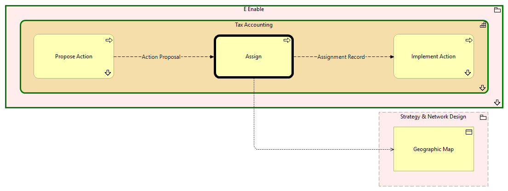

Assign - Context
(
)

generated_by
build_archi_xml.py::gen_proc_node_context_view
generator_path
pedro/capabilities/build_archi_xml_assign/build_archi_xml_assign.py
run_at
2026-10-10T17:56:37
view_type
process_context
E Enable
Tax Accounting
Propose Action
Propose Action - Context
Assign
Implement Action
Implement Action - Context
Tax Accounting - Processes
E Enable - Processes
Strategy & Network Design
Geographic Map
Action Proposal
Propose Action
Assign
Assignment Record
Assign
Implement Action
Assign
Geographic Map